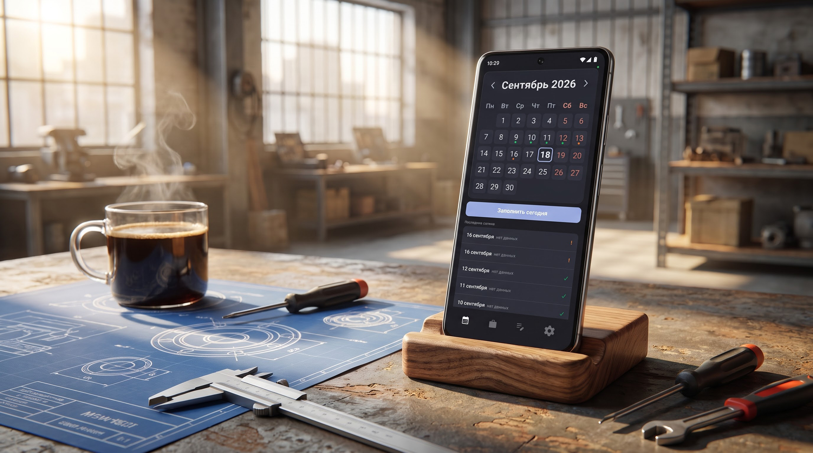
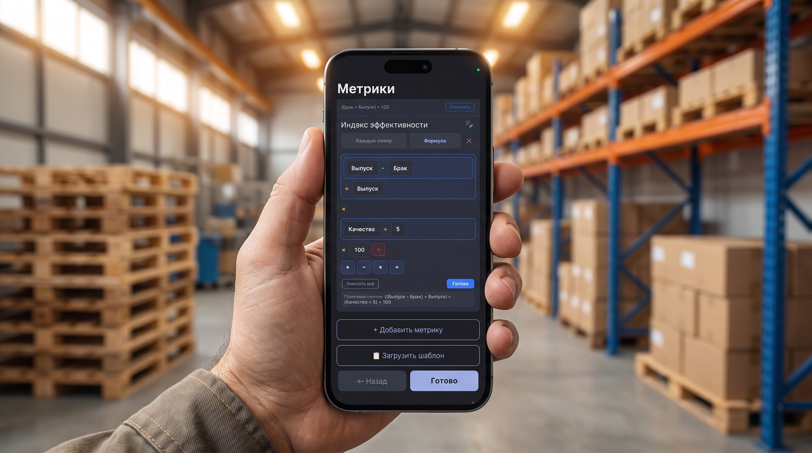
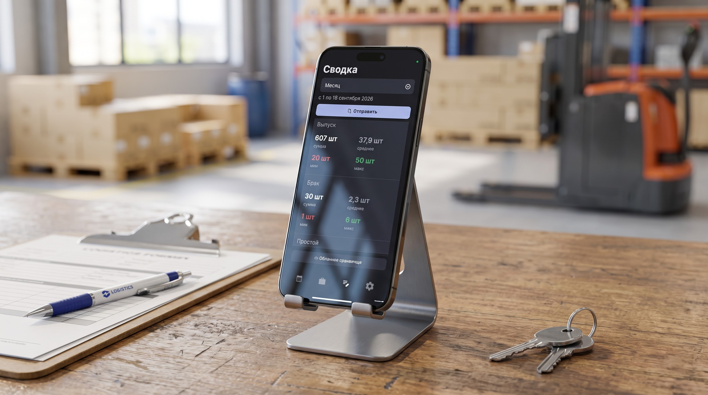

Распределение премий и сдельной оплаты в сменных бригадах часто становится источником конфликтов между сотрудниками и руководством. Субъективная оценка «на глаз», потерянные записи в журналах и сложные расчёты на калькуляторе снижают мотивацию рабочих и отнимают часы у начальников смен.
В этом руководстве разберём, как вести учёт показателей каждого сотрудника в смартфоне и получать прозрачный общий KPI бригады по формуле — без калькулятора и вечернего сведения цифр в Excel.
Мобильное приложение «Табель: Отчёты по сменам» разработано для бригадиров, мастеров цехов, начальников складов и руководителей сменных подразделений. Приложение работает на 100% офлайн и берёт на себя все математические расчёты.
В профиле подразделения задаются показатели, влияющие на результат:
Формула собирается прямо на экране: нужные метрики и знаки действий просто добавляются нажатием, а конструктор сам складывает из них выражение и сразу показывает результат — печатать формулу вручную не нужно. Настроить правило нужно один раз для подразделения — дальше оно само пересчитывает общий показатель по бригаде или за выбранный период.

Несколько примеров того, что можно собрать из своих метрик:
В конце смены бригадир отмечает присутствующих сотрудников и вносит фактические значения по каждому. Формула сразу пересчитывает общий KPI бригады — без похода к калькулятору или в Excel.

После закрытия смены приложение позволяет:
Да. Приложение «Табель» полностью автономно. Все расчёты производятся локально на смартфоне. Интернет требуется только при отправке отчёта или синхронизации с Яндекс.Диском.
Нет. Приложение устанавливается только на смартфон бригадира или мастера, который ведёт учёт. Базовая версия бесплатна (до 3 сотрудников), а расширенный Pro-функционал (экспорт в CSV, неограниченный состав бригады) оформляется по подписке (помесячно или на год) на устройстве руководителя.
Да, двумя способами. Приложение раз в сутки автоматически создаёт резервную копию текущего подразделения (список сотрудников, метрики, формулы, история отчётов) на вашем личном Яндекс.Диске — на новом телефоне достаточно подключить тот же Диск: приложение само найдёт последнюю копию и предложит восстановить её в один тап. Отдельно кнопкой «Передать настройки сотруднику» можно переслать файл .sconfig — это только шаблон метрик и формул (без истории уже сохранённых отчётов), удобно, чтобы быстро настроить нового бригадира с нуля.
Установите «Табель: Отчёты по сменам» и настройте расчёт премий за 5 минут.